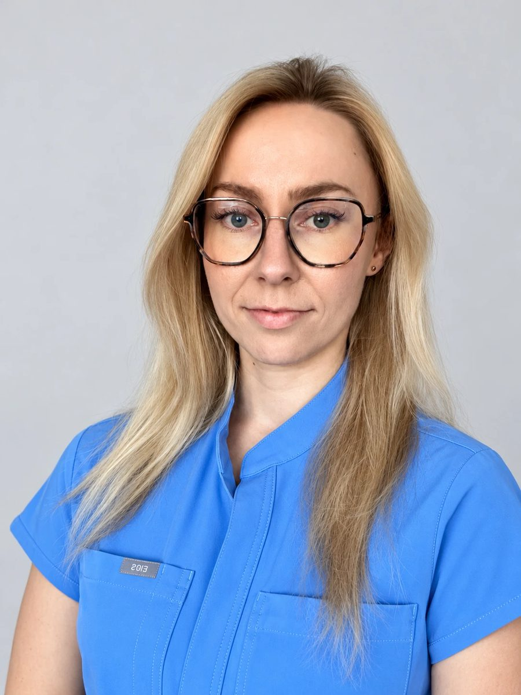

lek.Anna Sankowska
specjalista medycyny rodzinnej
Absolwentka Wydziału Lekarskiego Warszawskiego Uniwersytetu Medycznego, specjalista medycyny rodzinnej. Przyjmuje zarówno dorosłych, jak i dzieci.
Więcej o lekarzu
W Państwowym Egzaminie Specjalizacyjnym z medycyny rodzinnej w sesji wiosennej 2025 uzyskała drugi wynik w Polsce.
Jest członkinią Polskiego Towarzystwa Medycyny Rodzinnej oraz Polskiego Towarzystwa Leczenia Otyłości. Posiada certyfikat dotyczący leczenia otyłości wydany przez PTLO.
Rozwija swoje kompetencje również poprzez szkolenia m.in. z zakresu ultrasonografii, leczenia ran oraz stanów nagłych. W swojej pracy stawia na medycynę opartą na aktualnej wiedzy, profilaktykę oraz partnerską współpracę z pacjentem.